C++ "链链"不忘@必有回响之双向链表
1. 前言
写过一篇与单链表相关的博文，实际应用中，双向循环链表的功能更强大。
单链表中，查询一个已知结点的后驱结点的时间复杂度为O(1)。因结点本身不存储与前驱结点相关的地址信息，查询前驱结点需要从头结点扫描一次，时间复杂度为O(n)。
双向链表为结点类型增加了可以存储前驱结点地址的指针位，如下图所示：
如此，无论查询已知结点的后驱还是前驱结点的时间复杂度都是O(1)，缺点是需要付出空间上的代价。
在权衡算法性能时，会优先考虑时间复杂度的优劣，往往会采用空间换时间的策略。
结点的类型定义：
typedef int dataType;
//结点
struct LinkNode {
//数据成员
dataType data;
//后驱结点的地址
LinkNode *next;
//前驱结点的地址
LinkNode *pre;
//构造函数
LinkNode(dataType data) {
this->data=data;
this->next=NULL;
this->pre=NULL;
}
};
2. 双向链表
双向链表中除了有存储头结点的head头指针变量外，一般还会增加一个存储尾结点的名为tail尾指针变量。这样，可以实现从头到尾或从尾到头对链表进行遍历。
为了操作的方便，初始化链表时都会提供一个空白的头结点作为标识结点。
在双向链表中，在尾结点的后驱指针位存储头结点地址，头结点的前驱指针位存储尾结点地址，形成一个首尾相连的闭环，称这样的链表为双向循环链表。
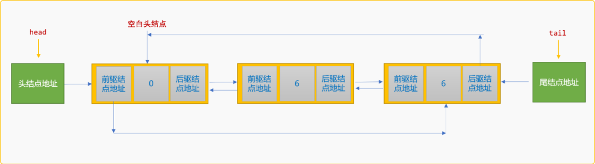
双向链表需要提供对链表中的数据进行常规维护的算法，如：
- 链表初始化。
- 创建链表。
- 查找。
- 后插入、前插入。
- 删除。
- ……
算法的整体思路和单链表相似，因结点中多了一个前驱结点信息，为各种操作带来便利的同时，需要注意细节。下文将介绍双向链表中的几个重要函数。
2.1 初始化
如果是双向循环链表，初始化时：
head和tail指向空白头结点。- 且
head的前驱结点和tail的后驱结点也指向空白头结点。这个过程也可以放到创建链表时实现。
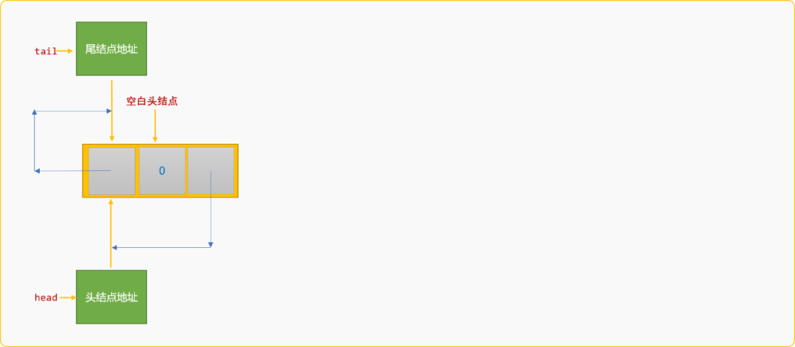
class LinkList {
private:
//头指针
LinkNode *head;
//尾指针
LinkNode *tail;
//链表的长度
int length;
public:
//构造函数
LinkList() {
this->initLinkList();
}
//初始化链表
void initLinkList() {
//头指针存储空白头结点地址
this->head=new LinkNode(0);
//尾指针和头指针位置相同
this->tail=this->head;
//尾结点的后驱结点是头结点
this->tail->next=this->head;
//头结点的前驱结点是尾结点
this->head->pre=this->tail;
}
//……其它函数
2.2 创建链表
可以使用头部插入或尾部插入算法创建链表，本文仅介绍尾部插入创建算法，头部创建算法可自行了解。如下演示使用尾部创建法构建以数列{7，3}为数据的链表。
- 创建值为
7的新结点n。
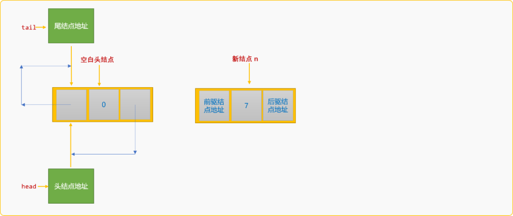
- 设置新结点
n的前驱结点为原尾结点。
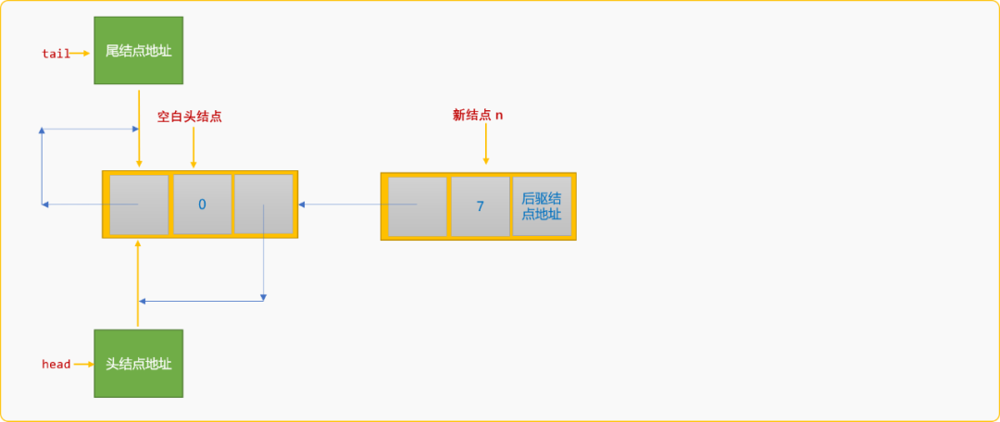
- 设置新结点
n的后驱结点为原尾结点的后驱结点。
- 设置原尾结点的后驱结点为新结点
n。
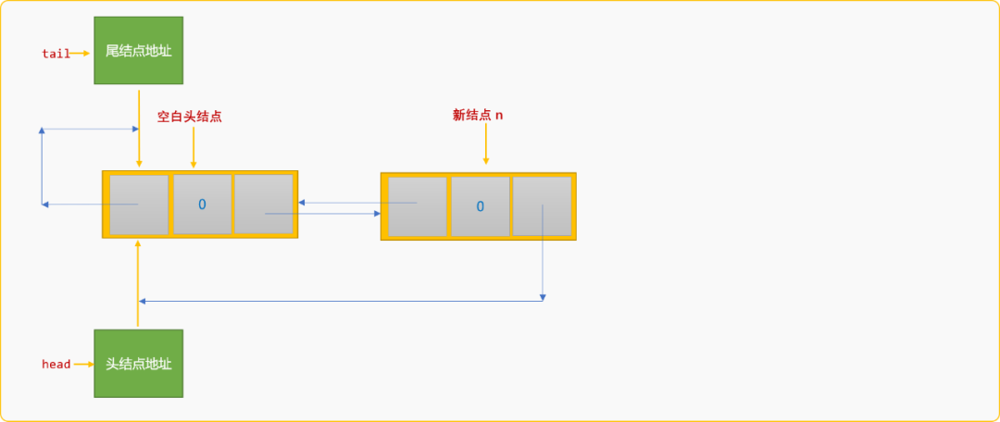
- 新结点
n成为新的尾结点。
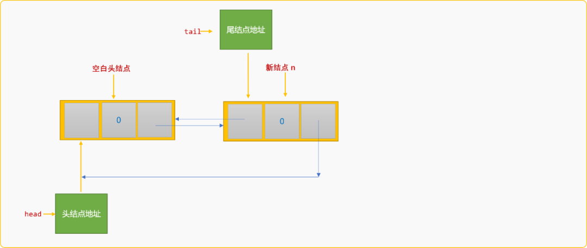
- 设置头结点的前驱结点为新的尾结点。
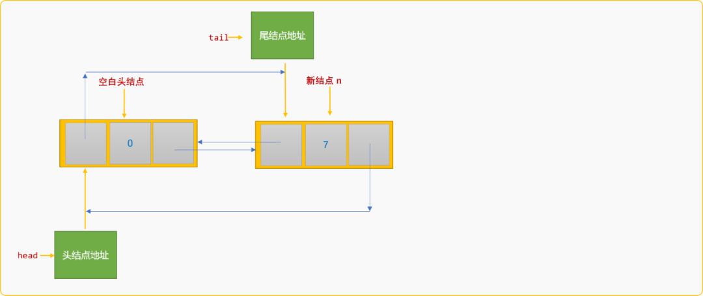
重复上述流程，最终完成链表的创建过程。
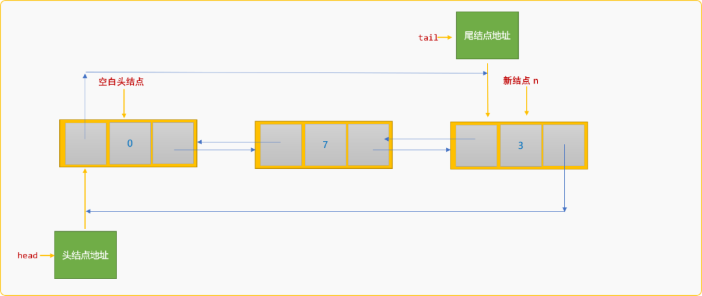
是否可以无视上述创建流程中的顺序？
全局而言，顺序基本是要遵循上述的要求，原则是新结点->尾结点->头结点。
- 新结点：先设置新结点的前驱和后驱结点的地址。新结点的相应存储位都是空白的，先设置前驱还是后驱不影响结果。
- 尾结点：修改原尾结点的后驱结点地址为新结点，原尾结点的使命完成后，再指定新结点为新的尾结点。
- 头结点：修改头结点的前驱地址为新尾结点。
编码实现：
//尾部插入方式创建链表
void createFromTail(int n) {
LinkNode *newNode,*p,*tail;
//头结点地址
p=this->head;
//尾结点地址
tail=this->tail;
for(int i=0; i<n; i++) {
//构建一个新结点
newNode=new LinkNode(0);
cout<<"请输入结点数据"<<endl;
cin>>newNode->data;
//原来的尾结点成为新结点的前驱结点
newNode->pre=tail;
//新结点的后驱结点为原来的尾结点的后驱结点
newNode->next=tail->next;
//原尾结点的后驱结点为新结点
tail->next=newNode;
//新结点成为新的尾结点
tail=newNode;
//头结点的前驱为新尾结点
head->pre=tail;
}
this->head=p;
this->tail=tail;
}
测试尾部创建：
int main(int argc, char** argv) {
LinkList list {};
list.createFromTail(2);
//没删除之前
cout<<"显示创建结果:"<<endl;
LinkNode *head= list.getHead();
cout<<"从头结点向尾结点方向搜索："<<endl;
cout<<head->next->data<<endl;
cout<<head->next->next->data<<endl;
LinkNode *tail=list.getTail();
cout<<"从尾结点向头结点方向搜索 ："<<endl;
cout<<tail->data<<endl;
cout<<tail->pre->data<<endl;
head=tail->next;
cout<<"从尾结点的后驱信息位得到头结点信息 ："<<endl;
cout<<head->next->data<<endl;
cout<<head->next->next->data<<endl;
return 0;
}
执行结果：
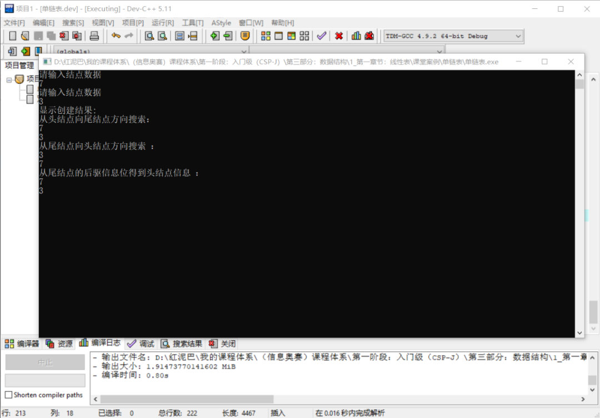
2.3 查找
因双向链表的头尾是相连的，其查询方案可以很多：
- 按位置查找：按位置查找建议从头结点开始。
- 按值查找：按值查找可以从头结点或从尾结点开始。
- 查询所有：查询所有可以从头结点也可以从尾结点开始。
2.3.1 按位置查找
设空白头结点编号为0，从头结点向尾结点扫描过程中，给扫描到的结点依次编号，当查询到和指定参数相同的编号时停止。
//按位置查询结点（从头部扫描到尾部）
LinkNode * findNodeByIndex(int index) {
int j=0;
LinkNode *p=this->head;
if(index==j)
//如果 index 值为 0 ，返回空白头结点
return p;
//第一个数据结点
p=p->next;
//设置第一个数据结点的编号为 1 ，当然这不是绝对，可以根据自己的需要设置编号
j=1;
while(p!=this->head && j<index) {
p=p->next;
j++;
}
if(j==index)return p;
else return NULL;
}
2.3.2 按值查找
按值查找可以有 2 种方案：
- 头结点向尾结点方向查找。
//按值查询结点
LinkNode * findNodeByVal(dataType val) {
//从第一个数据结点开始查找
LinkNode *p=this->head->next;
//当 p 再次指向头结点结束查找，这也空白结点存在的意义
while(p!=this->head && p->data!=val ) {
p=p->next;
}
if(p!=this->head) {
return p;
} else {
return NULL;
}
}
- 尾结点向头结点方向查找。
LinkNode * findNodeByValFromTail(dataType val) {
//从尾结点开始查找
LinkNode *p=this->tail;
while(p!=this->head && p->data!=val ) {
//向头结点方向
p=p->pre;
}
if(p!=this->head) {
return p;
} else {
return NULL;
}
}
2.3.3 查询所有
- 从头结点向尾结点方向查询所有结点。
void showSelf() {
if(this->head==NULL)return;
//得到第一个数据结点
LinkNode *p=this->head->next;
while(p!=this->head) {
cout<<p->data<<"\t";
p=p->next;
}
}
- 从尾结点向头结点方向查询所有结点。
void showSelf_() {
if(this->tail==NULL)return;
LinkNode *p=this->tail;
while(p!=this->head) {
cout<<p->data<<"\t";
p=p->pre;
}
}
2.4 插入
插入有前插入和后插入 2 种方案，于双向链表而言，其时间复杂度都为O(1)。
2.4.1 后插入
把新结点插入到已知结点的后面，称为后插入，其插入流程如下所示：
- 找到已知结点
p，创建新结点n。
- 设置
n结点的前驱结点为已知结点p，设置其后驱结点为已知结点p的后驱结点。
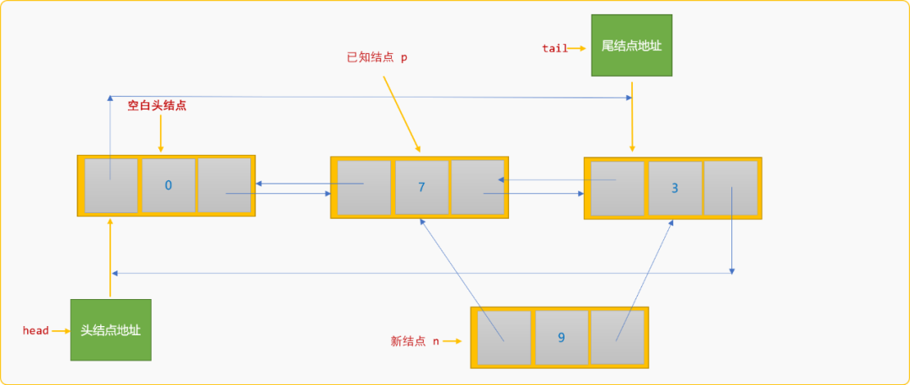
- 设置
p结点的后驱结点为n结点。
- 设置结点
n为其后驱结点的前驱结点。
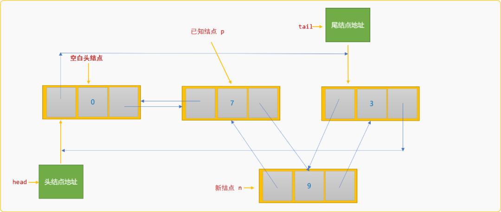
编码实现：
//后插入
int instertAfter(dataType val,dataType data) {
//按值查找到结点
LinkNode *p=this->findNodeByVal(val);
if (p==NULL) {
//结点不存在，返回 false
return false;
}
//创建新结点
LinkNode *n=new LinkNode(0);
n->data=data;
//设置 p 结点为新结点的前驱结点
n->pre=p;
//新结点的后驱结点为已知结点 p 的后驱结点
n->next=p->next;
//已知结点的后驱结点为新结点
p->next=n;
//已知结点的原后驱结点的前驱结点为新结点
n->next->pre=n;
return true;
}
测试后插入：
int main(int argc, char** argv) {
LinkList list {};
//创建 7,3 两个结点
list.createFromTail(2);
//在结点 7 后面插入值为 9 的结点
list.instertAfter(7,9);
list.showSelf();
return 0;
}
执行结果：
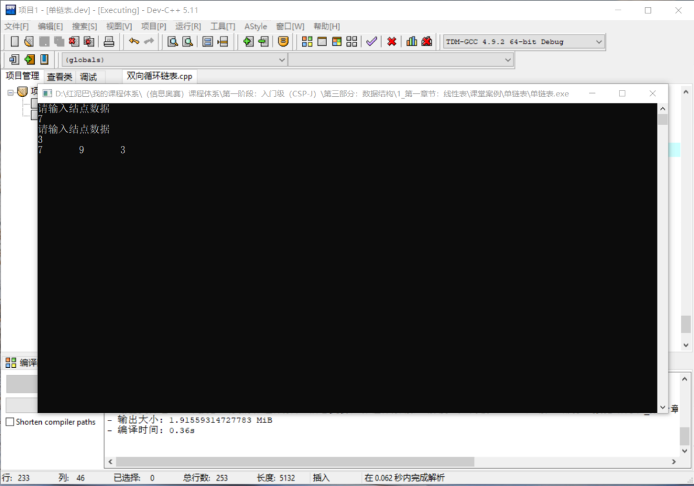
2.4.2 前插入
把新结点插入到已知结点的前面，称为前插入，因结点有前驱结点的地址信息，双向链表的前或后插入都较方便。
- 找到已知结点
p，创建新结点n。
- 设置结点
n的前驱结点为p的前驱结点，设置其后驱结点为p结点。
- 设置
p结点的前驱结点的后驱结点为n。
- 设置
p结点的前驱结点为n结点。
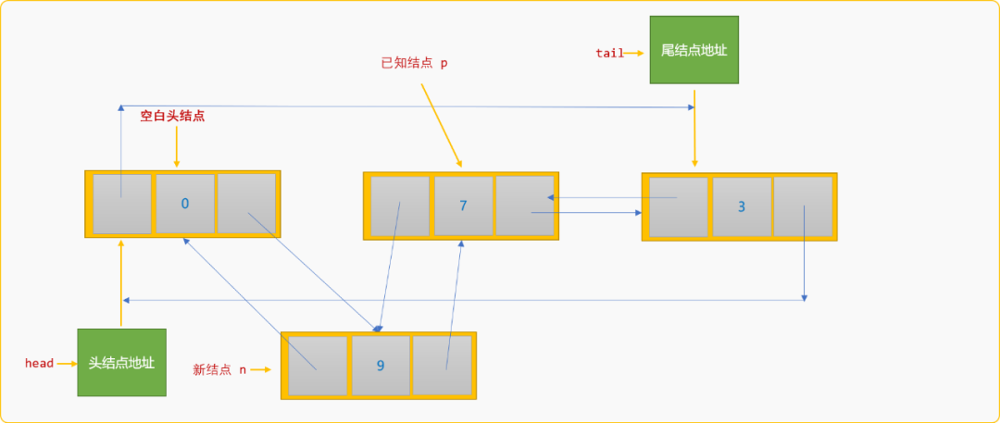
编码实现：
//前插入
int insertBefore(dataType val,dataType data) {
//按值查找到结点
LinkNode *p=this->findNodeByVal(val);
if (p==NULL)
return false;
//查找前驱结点
LinkNode *p1=this->head;
while(p1->next!=p) {
p1=p1->next;
}
//构建新结点
LinkNode *n=new LinkNode(0);
n->data=data;
//新结点的后驱为 p 结点
n->next=p;
//新结点的前驱为 p 的前驱
n->pre=p->pre;
//p 的前驱结点的后驱结点为 n
p->pre->next=n;
//p 的前驱结点为 n
p->pre=n;
return true;
}
测试前插入：
int main(int argc, char** argv) {
LinkList list {};
//创建 7,3 两个结点
list.createFromTail(2);
//在值为 7 的结点前面插入值为 9 的结点
list.insertBefore(7,9);
list.showSelf();
return 0;
}
执行结果：
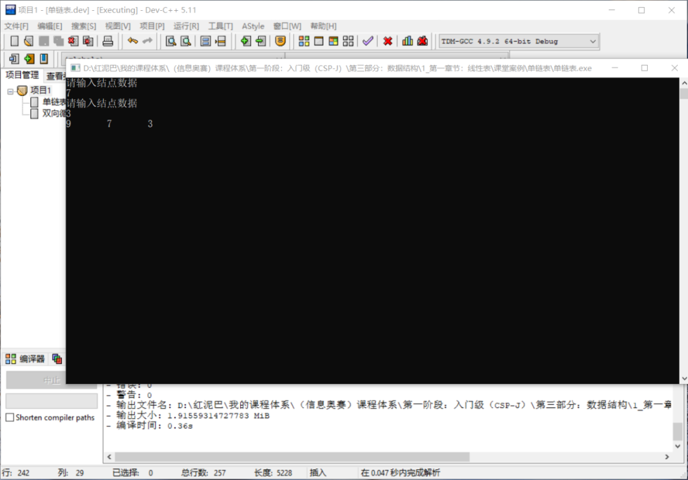
2.5 删除
2.5.1 删除结点
删除已知结点的基本操作流程：
- 查找到要删除的结点
p。
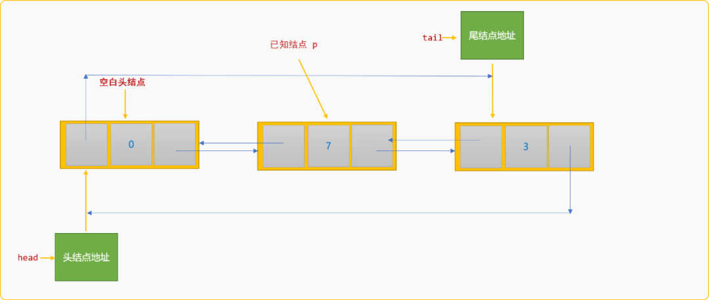
- 找到结点
p的前驱结点，设置其后驱结点为p的后驱结点。
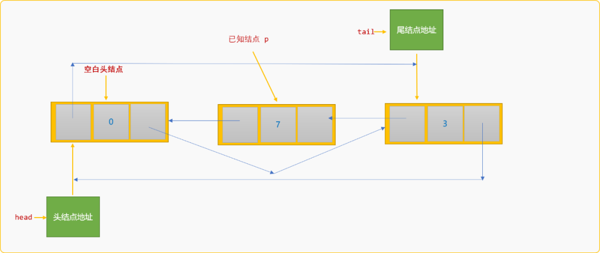
- 找到
p结点的后驱结点，设置其前驱结点为p结点的前驱结点。删除p结点。
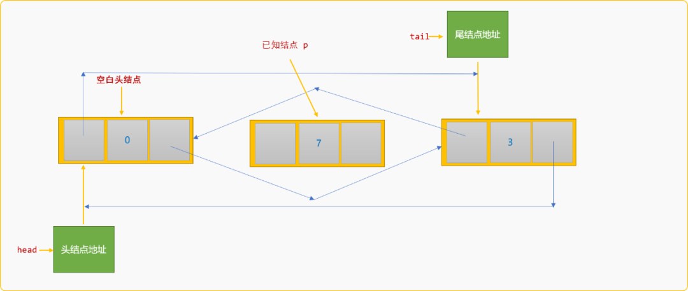
编码实现：
int delNode(dataType data) {
//按值查找到要删除的结点
LinkNode *p= this->findNodeByVal(data);
if (p==NULL)return false;
//设置 p 的前驱结点的后驱结点
p->pre->next=p->next;
p->next->pre=p->pre;
delete p;
return true;
}
测试删除操作：
LinkList list {};
//创建 {7,3,9} 3个结点
list.createFromTail(3);
//LinkNode *res= list.findNodeByValFromTail(4);
list.delNode(3);
list.showSelf();
执行结果：
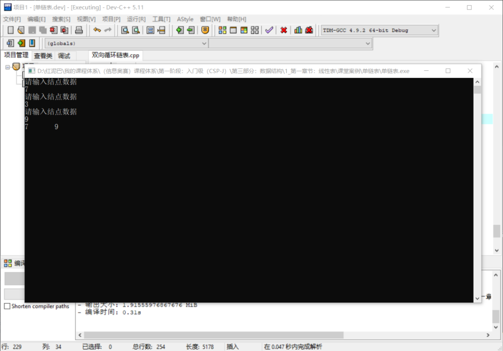
2.5.2 删除所有结点
编码实现：
void delAll() {
LinkNode *p=this->head->next;
//临时结点
LinkNode *p1;
while(p!=this->head) {
//保留删除结点的后驱结点
p1=p->next;
delete p;
p=p1;
}
this->head=NULL;
}
3. 算法案例
界定数列的要求：对于一个无序数列，首先在数列中找出一个基数，然后以基数为分界点，把小于基数的数字放在基数前面，反之放在后面。
3.1 演示流程
使用双向链表实现界定数列的流程。
- 已知的无序数列：
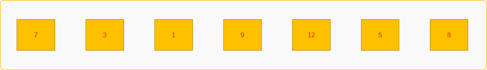
- 选择基数。这里选择第一个数字
7作为基数。保存在临时变量tmp中。声明2个变量left、right，分别指向第一个数据和最后一个数据。

- 从
right位置开始扫描整个数列，如果right位置的数字大于tmp中的值，则继续向左移动right指针直到遇到比tmp中值小的数字，然后保存到left位置。
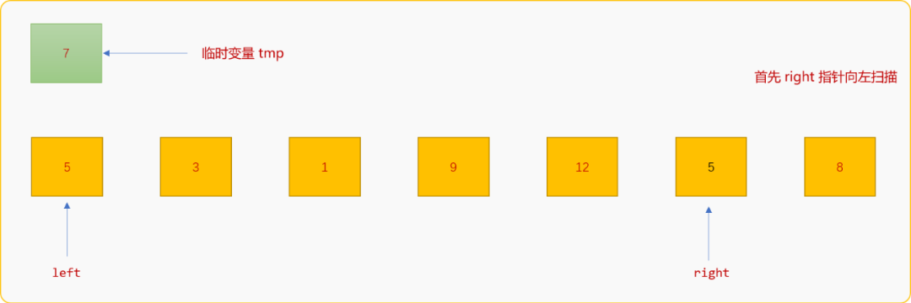
- 对
left指针的工作要求：当所处位置的数字比tmp值小时，则向右边移动直到遇到比tmp值大的数字，然后保存至right。

- 重复上述过程，直到
left和right指针重合。
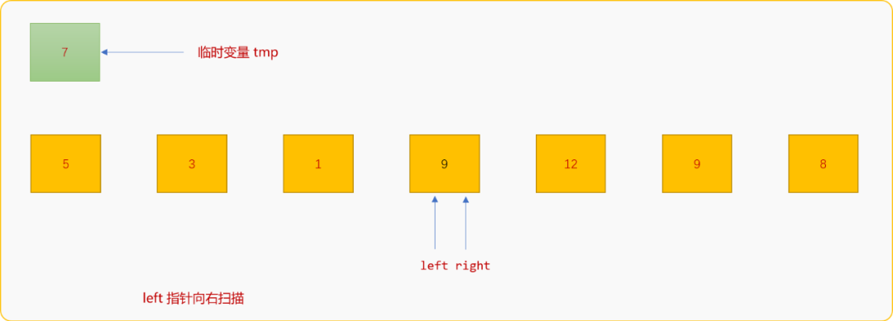
- 最后把
tmp中的值复制到left和right指针最后所指向的位置。最终实现以数字7界定整个数列。
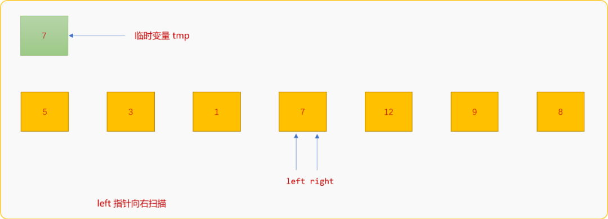
3.2 算法实现
使用双向链表实现上述需求：
- 初始化链表，并以尾部插入方式（保证数列的逻辑顺序和物理顺序一致）创建数列
{7,3,1,9,12,5,8}。
int main(int argc, char** argv) {
LinkList list {};
list.createFromTail(7);
//没删除之前
cout<<"显示创建结果:"<<endl;
list.showSelf();
return 0;
}
执行后结果：
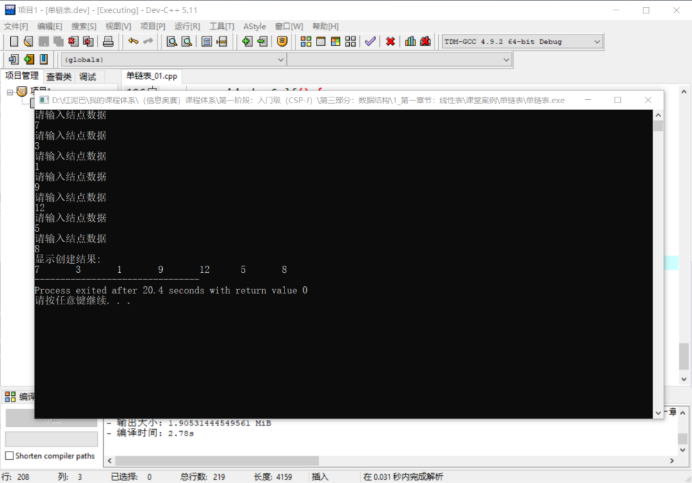
- 编写界定算法。
void baseNumBound() {
//第一个数据结点的数据作为界定数字
int tmp=this->head->next->data;
//左指针，指向第一个数据结点
LinkNode *left=this->head->next;
//右指针，指向尾结点
LinkNode *right=this->tail;
while(left!=right) {
while(left!=right && right->data>tmp) {
//右指针向左移动
right=right->pre;
}
left->data=right->data;
while(left!=right && left->data<tmp) {
//左指针向右移动
left=left->next;
}
right->data=left->data;
}
left->data=tmp;
}
测试代码：
int main(int argc, char** argv) {
LinkList list {};
list.createFromTail(7);
//没删除之前
cout<<"显示链表的创建结果:"<<endl;
list.showSelf();
list.baseNumBound();
cout<<"\n显示界定后的数列："<<endl;
list.showSelf();
return 0;
}
执行结果：
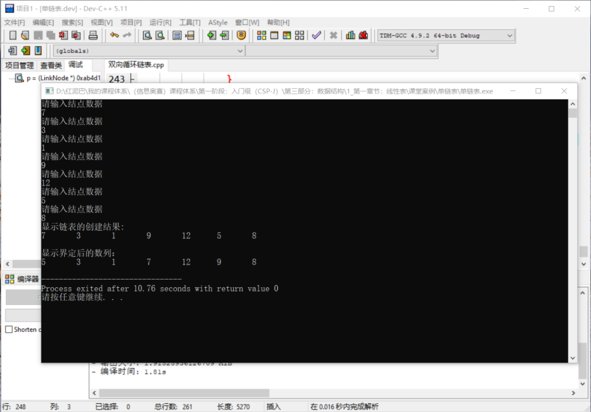
有了双链表，实现界定数列简单明了。
4. 总结
双向链表的结点多了一个前驱指针位，对其内部数据的维护提供了大大的便利。已知数据越多，算法也将会更大灵活伸缩空间。